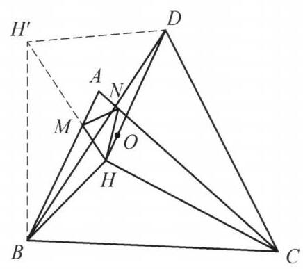

31 例 5：正三角形旋转与角相等证明
31.1 题目
在锐角 \triangle {ABC} 中, \angle A > {60}^{ \circ }, H 为 \triangle {ABC} 的垂心, M, N 分别在边 {AB},{AC} 上,且满足 \angle {HMB} = \angle {HNC} = {60}^{ \circ }.O 为 \triangle {HMN} 的外心, D 使得 \triangle {DBC} 为正三角形 (且 A, D 在 {BC} 同侧). 证明: H, O, D 三点共线.

图 4-5
31.2 参考解答
如图 4-5,由题设条件,知 \angle {ABH} = \; \angle {ACH} = {90}^{ \circ } - \angle A,\angle {HMB} = \angle {HNC} = {60}^{ \circ } ，故 \triangle {MHB} \backsim \triangle {NHC} ，则 \frac{MH}{NH} = \frac{BH}{HC} .
将 H 以 D 为中心顺时针旋转 {60}^{ \circ } 到 {H}^{\prime } ，则 \triangle D{H}^{\prime }H 为正三角形，且 \triangle {DB}{H}^{\prime } \cong \triangle {DCH} ，于是 {H}^{\prime }B = {HC} ，所以
\frac{MH}{NH} = \frac{BH}{B{H}^{\prime }}.
①
注意到
\angle {AHN} = \angle {CNH} - \angle {CAH}
= {60}^{ \circ } - \left( {{90}^{ \circ } - \angle C}\right)
= \angle {DBC} - \angle {CBH} = \angle {DBH}\text{ . }
同理 \angle {AHM} = \angle {DCH} = \angle {DB}{H}^{\prime } .
所以
\angle {MHN} = \angle {AHM} + \angle {AHN} = \angle {DB}{H}^{\prime } + \angle {DBH} = \angle {HB}{H}^{\prime }.
②
由①，②得 \triangle {H}^{\prime }{BH} \backsim \triangle {NHM} . 所以
\angle {MNH} = \angle H{H}^{\prime }B = \angle D{H}^{\prime }B - \angle D{H}^{\prime }H = \angle {DHC} - {60}^{ \circ }
\angle {MHO} = \frac{{180}^{ \circ } - \angle {MOH}}{2} = {90}^{ \circ } - \angle {MNH} = {150}^{ \circ } - \angle {DHC}.
由 {AH} \perp {BC} 得 \angle {AHD} = \frac{1}{2}\angle {BDC} - \angle {BDH} = {30}^{ \circ } - \angle {BDH} ,故
\angle {HDC} = {60}^{ \circ } - \angle {BDH} = {60}^{ \circ } - \left( {{30}^{ \circ } - \angle {AHD}}\right) = \angle {AHD} + {30}^{ \circ },
\angle {DHC} = {180}^{ \circ } - \angle {HDC} - \angle {DCH} = {180}^{ \circ } - \left( {\angle {AHD} + {30}^{ \circ }}\right) - \angle {AHM}.
所以
\angle {MHO} = {150}^{ \circ } - \angle {DHC} = \angle {AHD} + \angle {AHM} = \angle {MHD},
故 H, O, D 三点共线. 原问题得证.
注:正三角形往往对应旋转 {60}^{ \circ } 的全等，结合条件中的 {60}^{ \circ } 角进一步提示要作出点 {H}^{\prime } .
31.3 解题思路与分析
之所以觉得这段证明“费解”，是因为教材采用的是“从已知到未知”的公理化正向书写顺序——一上来就做辅助线、导出一堆等角，最后突然水到渠成。这种写法抹去了思考的脚手架。
如果我们用“逆向分析（从结论倒推需求）”的视角把这道题拆解开，你会发现每一步构造和导角其实都是被逼出来的必然选择。我们可以将整个思维过程还原为以下四个阶段：
31.3.1 第一阶段：目标转化——如何破译“外心共线”？
题目要证 H, O, D 三点共线，其中 O 是 \triangle HMN 的外心。 在平面几何中，直接处理外心 O 往往很棘手，但有一个极其标准的转化工具（等角共轭的雏形）：在 \triangle HMN 中，连接顶点 H 与外心 O 的射线，其方向完全由内角 \angle MNH 决定。
具体来说，因为 OM = OH 且圆心角 \angle MOH = 2\angle MNH，在等腰 \triangle MOH 中必然有： \angle MHO = \frac{180^\circ - \angle MOH}{2} = 90^\circ - \angle MNH
- 逆向思考的第一步：要证 H, O, D 共线，本质上就是要证射线 HD 与射线 HO 重合，也就是要证： \angle MHD = \angle MHO = 90^\circ - \angle MNH
- 核心痛点浮现：\angle MHD 是 \triangle ABC 垂心与外部正三角形顶点构成的角，很容易用 \triangle ABC 的角度来表示；但 \angle MNH 是悬在半空的 \triangle HMN 的一个内角（因为 M, N 是满足 60^\circ 角的浮动点，MN 的位置并不直观）。
因此，破题的核心任务只有一个：如何把 \triangle HMN 的内角 \angle MNH，“翻译”成与 A, B, C, H, D 直接相关的角？
31.3.2 第二阶段：顺藤摸瓜——如何确定 \triangle HMN 的形状？
既然要求 \triangle HMN 的内角 \angle MNH，我们就必须搞清楚 \triangle HMN 的形状（即找到一个和它相似的三角形）。
我们手里有什么关于 \triangle HMN 的信息？ 1. 两边之比：题设给了 \angle HMB = \angle HNC = 60^\circ，而垂心天然自带 \angle ABH = \angle ACH = 90^\circ - A。两角对应相等，直接白送一对相似三角形： \triangle MHB \sim \triangle NHC \implies \frac{MH}{NH} = \frac{BH}{HC} 2. 两边的夹角：在四边形 AMHN 中，\angle AMH = \angle ANH = 120^\circ，所以夹角是固定的： \angle MHN = 360^\circ - 120^\circ - 120^\circ - A = 120^\circ - A
- 逆向思考的第二步（最关键的构造冲动）： 在 \triangle HMN 中，我们知道了两边之比（等于 BH : HC），还知道了夹角（等于 120^\circ - A）。 根据 SAS（边角边）相似判定定理，如果我们能把线段 BH 和 HC 搬到同一个顶点处，并且让它们的夹角恰好等于 120^\circ - A，那么拼出来的新三角形就一定与 \triangle HMN 相似！一旦相似，神秘的 \angle MNH 就会被直接转移到由 B, C, H 构成的图形中。
31.3.3 第三阶段：辅助线的诞生——为什么要把 H 绕 D 旋转 60^\circ？
现在目标非常明确：把 BH 和 HC 拼到一起，让夹角为 120^\circ - A，同时必须把题设中孤立的正三角形 \triangle DBC 用上。
为什么想到绕 D 旋转 60^\circ？ 观察 BH 和 HC，它们分别连着 B 和 C。而 \triangle DBC 是正三角形，意味着 DC = DB 且 \angle CDB = 60^\circ。 在几何变换中，“共顶点的正三角形”是旋转 60^\circ 的标准信号：以 D 为中心顺时针旋转 60^\circ，点 C 就会完美地重合到点 B 上！ 既然如此，我们把整个 \triangle DCH 绕点 D 顺时针旋转 60^\circ，设 H 落到 H'（即 \triangle DBH' \cong \triangle DCH）。这样一来，线段 HC 就被等长地搬运成了线段 BH'，与 BH 汇聚于同一个顶点 B！
检验夹角是否真的等于 120^\circ - A： 我们来看看搬过去之后，BH 与 BH' 的夹角 \angle HBH' 是多少：
- \angle DBH = \angle DBC - \angle HBC = 60^\circ - (90^\circ - C) = C - 30^\circ
- \angle DBH' = \angle DCH = \angle DCB - \angle HCB = 60^\circ - (90^\circ - B) = B - 30^\circ
- 两角相加：\angle HBH' = (C - 30^\circ) + (B - 30^\circ) = B + C - 60^\circ = 120^\circ - A = \angle MHN！
(注：教材证明中写 \angle AHN = \angle DBH 和 \angle AHM = \angle DBH'，只是把 120^\circ - A 拆成了左右两半分别验证：因为 \angle AHN = 60^\circ - (90^\circ - C) = C - 30^\circ，\angle AHM = B - 30^\circ。分拆写虽然严谨，但掩盖了整体夹角为 120^\circ - A 的直观本质。)
- 顺水推舟拿到相似： 两边之比 \frac{BH}{BH'} = \frac{MH}{NH}，夹角 \angle HBH' = \angle MHN，于是 \triangle H'BH \sim \triangle NHM。 这一下就把困在里面的 \angle MNH 彻底解救出来了： \angle MNH = \angle HH'B 而将 H 绕 D 旋转 60^\circ 到 H'，顺带还附赠了一个正三角形 \triangle DH'H（\angle DH'H = 60^\circ），于是： \angle MNH = \angle HH'B = \angle DH'B - \angle DH'H = \angle DHC - 60^\circ 代回第一阶段的目标式，就得到了： \angle MHO = 90^\circ - \angle MNH = 150^\circ - \angle DHC
31.3.4 第四阶段：揭开结尾导角的伪装——最后几行在算什么？
证明的最后一段（引入 \frac{1}{2}\angle BDC 和 \angle BDH）往往最让人摸不着头脑。为什么突然去算 \angle AHD 和 \angle HDC？
其实，拿到 \angle MHO = 150^\circ - \angle DHC 后，我们要证它等于 \angle MHD，也就是要证： \angle MHD + \angle DHC = 150^\circ 把 \angle MHD 拆成已知的 \angle AHM（即 \angle DCH）和 \angle AHD，我们要验证的等式其实就是： \angle AHD + \angle DCH + \angle DHC = 150^\circ 而在 \triangle DHC 中，由内角和定理知 \angle DCH + \angle DHC = 180^\circ - \angle HDC。代入上式，你会发现最后几行绕来绕去，唯一的目的只是想证明一个极其简单的几何事实： \angle HDC - \angle AHD = 30^\circ \quad (\text{即 } \angle HDC = \angle AHD + 30^\circ)
为什么这个事实是显然的？ * 因为 AH \perp BC，且 \triangle DBC 是正三角形（\angle DCB = 60^\circ），所以直线 AH 与直线 CD 的夹角必然是固定的 30^\circ！ * 如果你把 AH 延长与 CD 交于点 P，那么 \angle APD = 30^\circ。在 \triangle PHD 中直接用外角定理，一秒钟就能得出： \angle HDC = \angle AHD + \angle APD = \angle AHD + 30^\circ * 教材为什么不这么写？ 因为教材不想在图上多画一个交点 P，于是借助正三角形 \triangle DBC 的对称轴（它与高线 AH 平行，且平分 \angle BDC 为两个 30^\circ），用内错角 \angle AHD = 30^\circ - \angle BDH 把角度导了过去。这种“省掉交点”的写法虽然紧凑，却把原本一眼就能看穿的“两直线夹角为 30^\circ”变成了一串晦涩的代数消元。
31.3.5 总结：整道题的思维链条
把这四步串起来，这道题的诞生过程其实非常自然：
\begin{aligned} \text{欲证 } H,O,D \text{ 共线} &\Longleftrightarrow \text{需证 } \angle MHD = \angle MHO = 90^\circ - \angle MNH \\ &\Longleftrightarrow \text{需计算 } \angle MNH \text{（即确定 } \triangle HMN \text{ 的形状）} \\ &\xLeftarrow{\text{已知}} \frac{MH}{NH} = \frac{BH}{HC} \text{ 且 } \angle MHN = 120^\circ - A \\ &\Longrightarrow \text{渴望将 } BH, HC \text{ 拼到一起构造 SAS 相似} \\ &\xLeftarrow{\triangle DBC \text{ 为正三角形}} \text{绕 } D \text{ 旋转 } 60^\circ \text{ 将 } HC \text{ 搬到 } BH'，\text{得 } \triangle H'BH \sim \triangle NHM \\ &\Longrightarrow \text{成功将 } \angle MNH \text{ 转化为 } \angle DHC - 60^\circ \\ &\xLeftarrow{AH \text{ 与 } CD \text{ 夹角为 } 30^\circ} \text{利用 } \triangle DHC \text{ 内角和消去角度，得出 } \angle MHO = \angle MHD. \end{aligned}
31.4 分步证明
31.4.1 步骤 0：已知条件与几何构型
在锐角 ΔABC 中，∠A > 60°，H 为垂心。 点 M, N 分别在边 AB, AC 上，满足 ∠HMB = ∠HNC = 60°。 O 为 ΔHMN 的外心。 以 BC 为边在 A 同侧作正三角形 ΔDBC。 目标：证明 H, O, D 三点共线。
31.4.2 步骤 1：① 垂心角与第一对相似 △MHB ∼ △NHC
因为 H 为 ΔABC 的垂心，所以高线与对边垂直： ∠ABH = ∠ACH = 90° - ∠A。 又由题设已知：∠HMB = ∠HNC = 60°。 两组对应角分别相等，故两三角形相似： ΔMHB ∼ ΔNHC &implies; MH / NH = BH / HC
31.4.3 步骤 2：② 绕点 D 旋转 60° 构造全等 △DBH’ ≅ △DCH
将点 H 绕正三角形顶点 D 顺时针旋转 60° 得到点 H’。 • 由旋转定义，ΔDH’H 为正三角形。 • 由于 ΔDBC 是正三角形，边 DC 绕 D 顺时针旋转 60° 恰与边 DB 重合。 因此整个三角形旋转对应： ΔDBH’ ≅ ΔDCH &implies; H’B = HC 且 ∠DBH’ = ∠DCH 将 HC = H’B 代入前式比例，得到： MH / NH = BH / BH’ (式 ∞)
31.4.4 步骤 3：③ 角度外角分解与夹角相等 ∠MHN = ∠HBH’
在 ΔAHN 中利用外角定理展开： ∠AHN = ∠CNH - ∠CAH = 60° - (90° - ∠C) = ∠C - 30°。 而在正三角形 ΔDBC 中： ∠DBH = ∠DBC - ∠CBH = 60° - (90° - ∠C) = ∠C - 30°。 因此：∠AHN = ∠DBH。 同理可证：∠AHM = ∠DCH = ∠DBH’。 两式相加合成大角： ∠MHN = ∠AHM + ∠AHN = ∠DBH’ + ∠DBH = ∠HBH’ (式 §)
31.4.5 步骤 4：④ 第二对相似 △H’BH ∼ △NHM
由式 ∞ 与式 §： 对应边成比例：NH / MH = BH’ / BH，且夹角相等：∠MHN = ∠HBH’。 根据边角边判定定理，两三角形相似： ΔH’BH ∼ ΔNHM 从而对应角相等： ∠MNH = ∠HH’B = ∠DH’B - ∠DH’H = ∠DHC - 60°
31.4.6 步骤 5：⑤ 外心 O 的圆心角-圆周角转化
因为 O 是 ΔHMN 的外心，故 OM = OH = ON。 由圆周角与圆心角定理，顶角 ∠MOH = 2∠MNH。 在等腰 ΔMOH 中，两底角相等： ∠MHO = (180° - ∠MOH) / 2 = 90° - ∠MNH 代入前一步结论 ∠MNH = ∠DHC - 60°： ∠MHO = 90° - (∠DHC - 60°) = 150° - ∠DHC
31.4.7 步骤 6：⑥ 角度等量代换得出 H, O, D 三点共线
因为 AH ⊥ BC，而正三角形 ΔDBC 的对称轴为 BC 垂直平分线，故 AH 平行于中垂线。 由角度关系推得： ∠AHD = 30° - ∠BDH &implies; ∠HDC = 30° + ∠AHD。 在 ΔDHC 中： ∠DHC = 180° - ∠HDC - ∠DCH = 180° - (∠AHD + 30°) - ∠AHM ∠DHC = 150° - (∠AHD + ∠AHM) = 150° - ∠MHD 整理得到：∠MHD = 150° - ∠DHC。 与上一步 ∠MHO = 150° - ∠DHC 对比，立即得出： ∠MHO = ∠MHD 由于射线 HO 与射线 HD 在 HM 同侧且夹角相等，射线重合，故 H, O, D 三点共线！ ✓ 命题获证 (Q.E.D.)